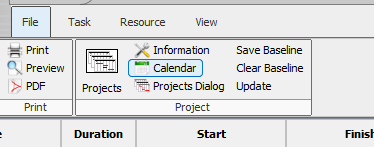

01
Ava ProjectLibre ja mine „Define Calendars"
Ava oma projektifail ProjectLibre's. Mine ülaribalt Project → Define Calendars. Avaneb kalenderihalduse dialoog, kus on näha vaikimisi kalender Standard.
// samm_01 — Project → Define Calendars

Vihje: ProjectLibre's asub kalenderihaldus menüüs
Project, mitte eraldi tööriistaribal. Veendu, et projekt on avatud enne menüüsse minemist.